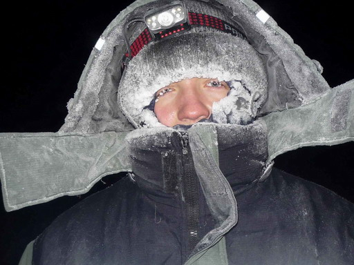

Институт физики атмосферыим. А.М.Обухова РАН
Лаборатория Математической Экологии
Участие в проектах
Публикации

КазанцевВладимирСергеевич
кандидатбиологических наук научный сотрудник
e-mail: kazantsev@ifaran.ru
Мои научные интересы лежат в области проведения полевых работ и обобщения экспериментальных данных по потокам метана из болотных экосистем. подробнее...
Мои научные интересы лежат в области проведения полевых работ и обобщения экспериментальных данных по потокам метана из болотных экосистем.
Обновлено Январь 2016 г.
© 2011-2016 GLL